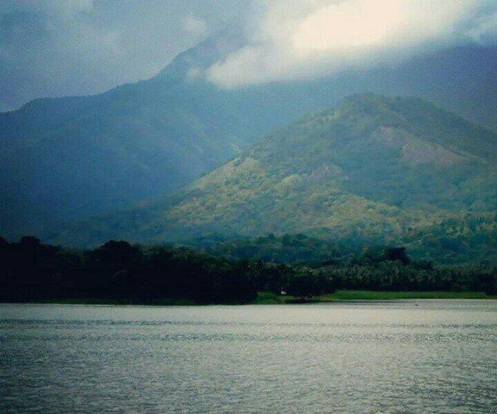

Nelliyampathy hills, wow place to enjoy the whole day, beautiful and cool place, nice to visit with friends

Have visited Parambikulam Tiger Reserve several times. It is a protected area located in the Anaimalai Hills of Western ghats in Kerala state. You can visit this Reserve area from Pollachi town in Tamil nadu state.

It’s a lower dam area near the Malampuzha Dam ,evening or early morning is the optional time to choose to spend there , awesome view of sunrise and sunsets experience